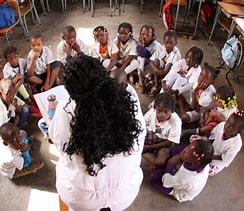

Projeto Educar para Transformar
O Projeto Educar para Transformar oferece oficinas educativas e culturais para crianças e adolescentes em situação de vulnerabilidade social, incentivando a educação, a criatividade e a inclusão.
As atividades incluem reforço escolar, teatro, música, dança e informática. O objetivo é criar oportunidades e ampliar o acesso à cultura e ao conhecimento.
Voltar